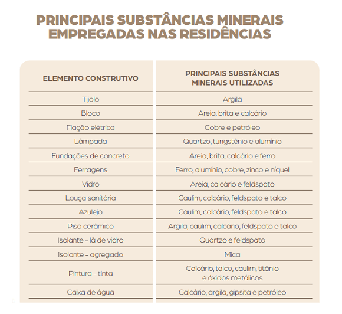
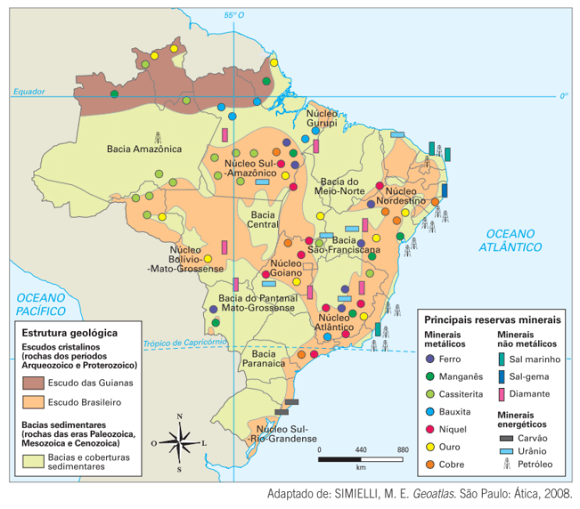
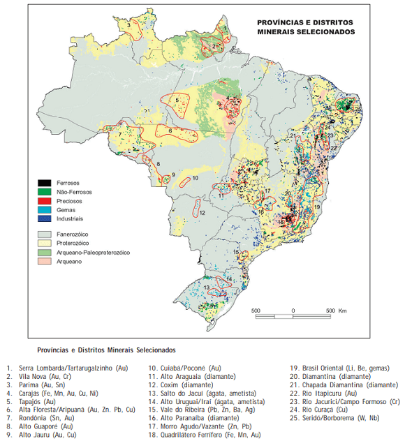
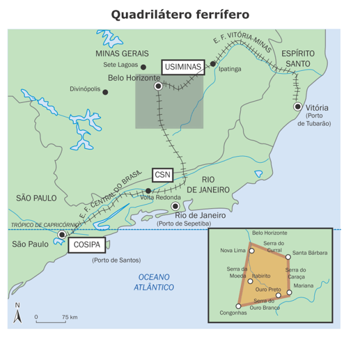
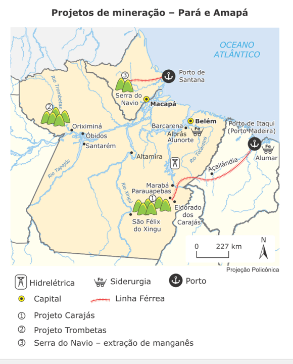
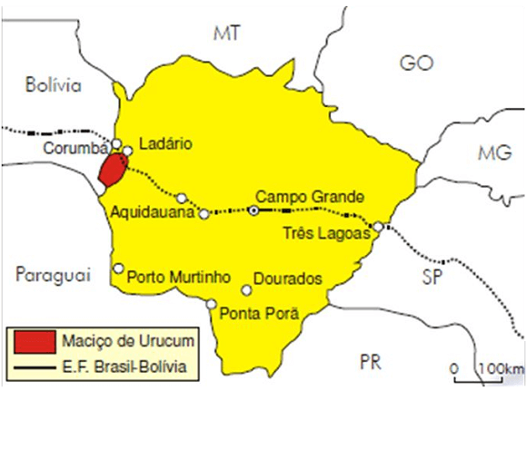
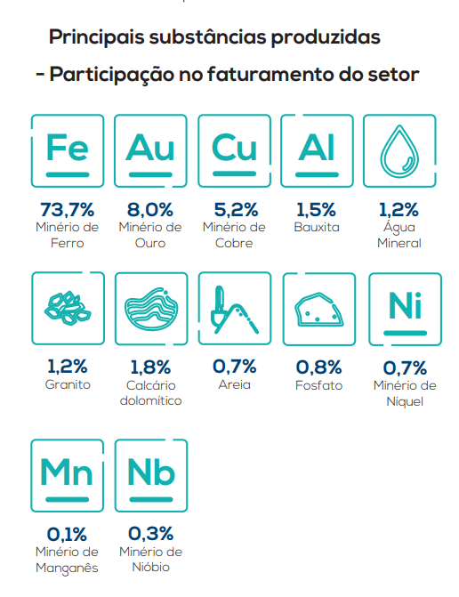
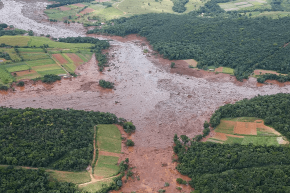

Objetivo: Entender como a complexa estrutura geológica do território brasileiro proporciona
grande quantidade e diversidade de minérios. Identificar e localizar as principais jazidas, bem como as
infraestruturas construídas para a sua exploração e para o transporte.
Digite seu nome
Introdução
Na última aula vimos como o relevo é classificado entre planaltos,
planícies e depressões, além das formas e características do litoral brasileiro.
Nesta aula, vamos relacionar o relevo com os minerais disponíveis no território brasileiro e como funciona
sua exploração econômica.
Ao final, você estará familiarizado com os minerais presentes no Brasil e com a infraestrutura necessária
para realizar essa complexa atividade.
Questões para serem respondidas no caderno sobre o tema da aula de hoje:
1. O que são minerais e como eles estão presentes em nosso cotidiano?
2. Qual a diferença entre mineral e minério?
3. Como a estrutura geológica do Brasil influencia a distribuição dos minerais?
4. O que são jazidas minerais e como elas se formam?
5. Cite dois exemplos de minérios metálicos encontrados no Brasil.
6. Onde está localizado o Quadrilátero Ferrífero e qual é sua importância para a produção de ferro?
7. Quais são os principais minérios encontrados na Serra dos Carajás e qual é sua relevância?
8. Qual é a importância do nióbio para o Brasil e onde está localizada a principal mina desse minério?
9. Explique a diferença entre minérios metálicos, não-metálicos e energéticos, dando exemplos de cada
um.
10. O que é a balança comercial e como ela está relacionada à exportação e importação de minérios pelo
Brasil?
Mineral e minério, qual a diferença?
No passado, a mineração deu um novo impulso no processo de colonização brasileiro e a exploração do ouro e de
outros metais preciosos durou séculos no território. Na sociedade atual a relação com os minerais é
altamente evidente, seja na agricultura através do solo e nossa alimentação; com o desenvolvimento da
indústria, da construção civil ou dos equipamentos eletrônicos, como os smartphones formados por
silício, ouro, prata, quartzo etc., todos são formados por minerais.
As casas utilizam o tijolo, que é feito de argila, as fundações são feitas de areia, calcário e ferro, a
pintura, o forro de gesso, cerâmicas e muitos outros objetos do nosso cotidiano não existiriam se não fossem
os minerais. Veja alguns exemplos abaixo:

Fonte: Confea.org.br
Os minerais são produzidos sem a interferência humana, ou seja, são substâncias
inorgânicas, naturais. Geralmente os minerais se encontram no estado sólido e possuem uma fórmula química
definida e seus átomos formam uma estrutura cristalina. Os minerais se associam e formam rochas (Vide aula
sobre o Ciclo das Rochas do 1º ano).
Já o minério está relacionado ao seu potencial econômico a fim de serem explorados. Eles são aglomerados de
minerais com concentrações variáveis que podem ser utilizadas como matérias-primas industriais. Por exemplo,
do minério Hematita, extrai-se o ferro; da Bauxita, o alumínio, da Pirolusita, o manganês, e assim por
diante. São classificados em metálicos, não-metálicos, e
energéticos.
Estrutura geológica e reservas minerais
A relação entre as rochas e a estrutura geológica fica mais evidente na medida em que podemos observar as
diferentes concentrações de minerais pelo território. Veja o mapa abaixo:

Fonte: Vesentini (2013).
Os escudos cristalinos, como sabemos, são os terrenos mais antigos desde a era Pré-Cambriana e sofreu intensa
erosão ao longo de milhões de anos. Nessa área pode-se encontrar granitos e gnaisses (empregadas na
construção civil, por exemplo) e minério de cromo, caulim, grafita. Os terrenos proterozoicos são mais
importantes economicamente, pois neles estão localizadas as principais riquezas minerais do Brasil, como
minério de ferro e de manganês, ouro, níquel, chumbo, prata e diamantes.
Nas bacias sedimentares, a maior parte do país, distribuem-se desde a era Paleozoica até a Cenozoica. As
principais riquezas minerais, pois, são exploradas economicamente de forma intensa, são: o petróleo e o
carvão
mineral. Com exceção do fundo mar, onde estão os maiores depósitos de petróleo do Brasil, ainda não se
descobriu grandes quantidades no continente.
O petróleo extraído do litoral brasileiro (Recôncavo Baiano, Sergipe, etc) foram formadas nas eras
mesozoicas. No conjunto do Planeta cerca de 30% das reservas de petróleo datam dessa era e os outros 60% são
da era Cenozoica. No Brasil, as bacias sedimentares para exploração de petróleo são localizadas na Amazônia
e em alguns trechos do litoral.
As jazidas e os tipos de minérios
Os minérios podem se concentrar com grandes volumes em regiões específicas do território formando as jazidas
minerais.
Há nas jazidas além de minerais, fósseis encontrados na superfície ou no interior que apresentem valor
econômico, constituindo riqueza mineral do País. O mapa abaixo reúne concentrações específicas de minerais
selecionados no país.

Fonte: Bizzi (2003, p. 378).
Nele, observa-se os minerais, ou seja, aqueles que apresentam em sua composição grande concentração de
substâncias que podem conduzir eletricidade e calor, além de grande maleabilidade e durabilidade, como o
ferro, o manganês, o estanho, a bauxita (alumínio) e o nióbio. O Brasil é um dos líderes mundiais na
exploração desses minérios.
Já os minérios não-metálicos podem ser definidos como aquelas substâncias que, mesmo não apresentado altas
concentrações de metais, são importantes matérias-primas para as indústrias. Ex. argila, o calcário, as
pedras preciosas, o grafite, o fosfato e o potássio.
Os minérios energéticos, por sua vez, são aqueles que poder ser aproveitados para a transformação de sua
energia química em outras fontes de energia, como térmica ou a mecânica. Os principais são: o petróleo, o
carvão mineral, o gás natural e o urânio. (Ver aula Fontes de energia I – combustíveis fósseis).
Localização dos principais recursos minerais do Brasil
Os recursos minerais são também commodities. Isso significa que são produtos que funcionam como
matéria-prima, produzidos em escala e que podem ser estocados sem perda de qualidade, como petróleo,
suco de laranja congelado, boi gordo, café, soja e ouro. O termo commodity vem do inglês e
significa mercadoria.
No Brasil, o ferro, por exemplo é uma importante mercadoria exportada pelo Brasil. O ferro é
caracterizado como um dos metais mais importantes para a atividade industrial em função da sua
durabilidade, dureza e abundância e também por ser um produto barato. É utilizado na fabricação do aço e
extraído da hematita, entre outros. O Brasil possui a quinta maior reserva do mundo, atrás da China
(1º), Ucrânia (2º), Rússia (3º) e Austrália (4º).
Umas das maiores concentrações de ferro no território brasileiro localiza-se no Quadrilátero
Ferrífero, localizado em Minas Gerais, delimitado pelas cidades de Belo Horizonte, Santa
Bárbara, Congonhas e Mariana. É uma área estratégica, por estar situada nas proximidades das grandes
siderúrgicas do Sudeste e pela facilidade em escoar a produção pela estrada de ferro Vitória-Minas e
pelo porto de Tubarão (ES). Responde por 70% da produção de ferro no país.

A outra região com grande concentração de minérios do Brasil é a situada na Serra dos
Carajás, localizada no sudeste do Pará, entre os rios Tocantins e Xingu. Descoberta em
1976, a jazida é considerada a maior de minério de ferro de alto teor do mundo. Os direitos de exploração
pertencem à Vale (antiga companhia Vale do Rio Doce privatizada em 1997), que exporta quase toda a
produção para o Japão. O transporte da produção é feito pela estrada de ferro Carajás em direção ao
Terminal de Ponta da Madeira, e escoada pelo porto de Itaqui (São Luís - MA). Também foi construída a
hidrelétrica de Tucuruí (2ª do Brasil) para o abastecimento energético.

Fonte: Organizado pelo autor.
Podemos, portanto, reunir alguns principais minérios extraídos no Brasil:
Manganês - É um metal utilizado nas indústrias química, de fertilizantes, de rações
animais, de pilhas e baterias e também na fabricação de aço, pois o torna mais resistente. É
extraído dos minérios pirolusita, polianita e rondonita. O Brasil o exporta como bens primários. Os
maiores mercado para esse minério são a China e a França. Os principais produtores são Minas Gerais
(Quadrilátero ferrífero), Pará (Serra dos Carajás) e Mato Grosso do Sul (Maciço do Urucum). A
produção da Serra do Navio (AP) encontra-se paralisada devido ao esgotamento das jazidas.

Estanho - Muito maleável, esse mineral é utilizado na fabricação de latas de
conservas, aparelhos elétricos e folhas de flandres (material de ferro e aço). É extraído do minério
cassiterita (rocha magmática plutônica), do qual o Brasil detém 70% das reservas mundiais. As
maiores jazidas ficam na Amazônia, com destaque para o Pará, Amazonas e Rondônia.
Alumínio - Extraído do minério bauxita, esse metal leve, maleável e que não
enferruja, utilizado nas indústrias aeronáutica, da construção civil, utensílios domésticos etc. O
Brasil é o terceiro país do mundo em termos de reservas (3,5 bilhões de T. atrás da Guiné e da
Austrália). Os principais produtores são: Pará (no município de Oriximiná, vale do rio Trombetas).
Umas das maiores do mundo, é explorada pela Mineração Rio do Norte S.A, formada pela Vale e pela
canadense Alcan.
Em Minas Gerais nos municípios de Poços de Caldas e Ouro Preto. 4 toneladas de bauxita são
necessárias para produzir 2 de alumina (matéria-prima do alumínio), as quais são suficientes para
produzir 1 de alumínio.
Ouro - Grande riqueza brasileira do século XVIII, esse metal é conhecido pela sua
maleabilidade, é utilizado pelas indústrias eletrônica, espacial, de instrumentos médicos e pela
ourivesaria. Por volta de 1950, o país assistiu a formação de grandes garimpos na Serra Pelada (PA)
e os vales do rio Madeira e Tapajós. Deixaram graves danos ao ambiente por conta da contaminação dos
rios por mercúrio. É na região de Paracatu (MG), que está a maior produção brasileira desse metal
(65 toneladas em 2012). A maior reserva do mundo está na África do sul (14%) e possui seis mil
toneladas. O Brasil possui 4,5%.
Quartzo – Minério utilizado na indústria de informática e eletroeletrônica. O Brasil
é um dos principais produtores do mundo e exporta esse produto para o Japão, China e Reino Unido. O
quartzo em cristal é produzido principalmente nos Estados da Bahia, também no Sudeste e Sul do país.
Nióbio - Esse metal pouco comum no mundo. É utilizado, principalmente, na indústria
de aços especiais, tais como na indústria aeroespacial ou em tubos para o transporte de gás. O
Brasil é líder absoluto da produção mundial, controlando 96% do mercado. Os principais produtores
são: MG (61%), GO (21%) e AM (12%). A principal mina do país está localizada em Araxá (MG). A
companhia Brasileira de Metalurgia e Mineração (CBMM) é a maior produtora desse minério.
Cobre - Esse é um metal muito importante para as metalúrgicas e eletroeletrônica.
No entanto, sua disponibilidade no Brasil é pequena. As reservas nacionais não chegam a 2% do total
mundial. O maior produtor mundial é o Chile, com mais de 30% do mercado. Investimento da Vale na
Mina do Sossego em Carajás deve aumentar a produção.
Sal - É um mineral que pertence ao grupo das rochas sedimentares, apesar de não ter
um valor muito alto como o ouro ou o cobre, é muito importante, principalmente na alimentação humana
e animal, e matéria-prima para indústria. O sal-gema encontra no subsolo. Já o sal marinho é obtido
por evaporação direta da água do mar. No Brasil, a grande maioria da produção é de origem marinha,
da qual cerca de 75% vêm do Rio Grande do Norte.
Balança comercial
A Balança Comercial registra os valores das importações e das exportações de mercadorias de um país. Se
o valor das exportações superar o das importações, diz-se que a balança comercial apresenta um
superávit. Se ocorrer o contrário, há um déficit.
O Brasil exporta minério de ferro, nióbio, bauxita, manganês, cassiterita (estanho) e níquel, entre
outros, pois os possui em grande quantidade. Entretanto, importa cobre, carvão mineral, zinco, prata,
tungstênio, enxofre e potássio, pois não há em abundância no território.
Em 2021, o Brasil teve um saldo de cerca de 48,9 bilhões de dólares e os principais minérios produzidos
foram:

Fonte: IBRAM (2022).
O Brasil exportou mais de 370 milhões de toneladas de minérios dos mais variados tipos no ano de 2021.
(Voltaremos nesse tema na aula sobre o Brasil na era da Globalização).
Questão ambiental e mineração
A mineração no Brasil e no mundo abarca uma importante parcela da economia de um país. Os minerais são
recursos não renováveis e seu processo de extração é considerada uma atividade não sustentável, haja
vista o grau de interferência no meio de vida do ser humano.
De modo particular, o meio ambiente é afetado devido a abertura de cavas (retirada da vegetação,
escavações, movimentação de terra e modificação da paisagem local); pelo uso de explosivos no desmonte
de rochas, provocando a vibração do terreno e o lançamento na atmosfera de fragmentos, gases, poeira; o
transporte e beneficiamento do minério (geração de poeira e ruído), afetando a água, o solo, o ar, além
de provocar doenças respiratórias, dentre outras coisas na população local. O grande desafio é buscar um
modelo de exploração com responsabilidade e sustentabilidade, sem degradar o meio ambiente, ou ao menos
com reduzido impacto, o que está na ordem do dia com debates em todas as esferas científicas e
políticas.
No Brasil, a Constituição Federal de 1988 (artigo 225) determina que a utilização de recursos minerais
deixa o empreendedor obrigado a recuperar o meio ambiente degradado. Nesse sentido, o agente de
exploração deve zelar pelo bem público, o meio ambiente, enquanto cabe ao Estado o papel de fiscalizar o
cumprimento da lei. Por isso, há integração de órgãos e competências nas três esferas (federal, estadual
e municipal), e também da sociedade, pode garantir um efetivo cumprimento da legislação ambiental e
mineral, assim como a recuperação de ambientes degradados. Além disso, há exigência para que a empresa
interessada na exploração mineral apresente um relatório de impacto ambiental (RIMA) e um plano de
recuperação da área degradada, sujeitos à análise e à aprovação dos órgãos competentes.
Entretanto, alguns desastres como o rompimento da barragem na cidade de Mariana (MG) em 2015 ou de
Brumadinho (MG) em 2019, este com 270 pessoas mortas e 4 desaparecidas, acontecem pelo mundo. Ocorre que
a atividade de extração de minério de ferro exige a separação do material valioso e daquele que não tem
valor comercial (rejeitos). Esse material que não será utilizado, conforme legislação, deve ser
armazenado em reservatório para não causar danos. As estruturas que servem de reservatório são feitas de
terra compactada e recebem o nome de barragem.

Fonte: Retrospectiva (2022).
Cerca de 14 milhões de toneladas de lama e rejeitos de minério de ferro percorreu 8 quilômetros em
poucos dias, poluindo o rio Paraopeba. Essas e outras são as grandes questões da interferência do homem
no meio geográfico.
Teste seu conhecimento
A Serra dos Carajás é uma estrutura geológica cristalina. Possui grande quantidade de minérios, exceto:
Teste seu conhecimento
O Brasil é o principal produtor e detém a maior reserva (mais de 90%) desse minério no mundo. É muito
utilizado na fabricação de equipamentos de tecnologia de ponta.
Teste seu conhecimento
Um dos principais impactos provocado pelas atividades mineradoras é:
Não existe pergunta boba! A Ciência é feita de perguntas!
P:
Como é a atividade de extração de minérios?
R:
O conjunto de operações que são realizadas visando à retirada do minério a partir do depósito mineral é
chamado de lavra. O depósito mineral em lavra é denominado mina, e esta denominação continua mesmo se a
extração mineral tenha sido suspensa. A lavra pode ser executada de modo bastante simples, por meio de
atividades manuais, ou até meios altamente mecanizados e em larga escala, como ocorre nas grandes
minerações. O garimpo é uma atividade de extração mineral rudimentar, mas significativa para a produção
de certos minerais como esmeralda, topázio, diamante, ouro, cassiterita, dentre outros.
P:
Qual a relação entre mineração e impactos ambientais?
R:
A principal forma de extração mineral no Brasil ocorre através de minas a céu aberto. O primeiro impacto
diz respeito à mudança na paisagem. A instalação de uma mina se inicia com o desmatamento da região a
ser lavrada e da retirada de todo o solo fértil, considerado “estéril” pelas mineradoras. O solo é
escavado e perfurado para a colocação de explosivos e carregado por grandes escavadeiras para fora da
área. A mudanças da paisagem influencia o microclima, a fauna, a flora, e a dinâmica hidrológica.
Com isso, vem a poluição atmosférica próximas às minas, com poeira e lama com material particulado que
pode causar danos à saúde das pessoas que vivem próximas às minas.
Os recursos hídricos podem sofrer impactos, inicialmente, no elevado consumo de água para beneficiamento
e para uso de minerodutos; problemas ligados ao rebaixamento do lençol freático devido a ampliação das
escavações e que pode gerar a diminuição no fluxo de água de rios; E por fim, sobre a recarga do
aquíferos, pois a canga, isto é, um material rico em hidróxido de ferro e alumínio é retirado do solo, e
este perde a porosidade necessária para a reabastecer a água, além de proporcionar a contaminação dos
cursos d’água.
P:
Quem pode extrair minério?
R:
Ao longo da história, grupos nacionais e estrangeiros reivindicaram o acesso à exploração dos recursos
minerais do país. Só em 1930 foi aprovado o Código de Minas, que estabelecia a exploração dessas jazidas
apenas por brasileiros. Porém, com a Constituição de 1934, o capital estrangeiro obteve concessões, três
anos depois, a Constituição do Estado Novo afirmou que os bens minerais eram propriedade da União e
atribuiu novamente aos brasileiros o direito exclusivo da exploração das jazidas minerais. Menos
enfática, a Constituição de 1946 estipulou que a exploração dos recursos minerais poderia ser conferida
exclusivamente a brasileiros ou a sociedades organizadas no país, sem proibir a associação entre
empresas nacionais e estrangeiras.
No regime militar (1964-1985), o extrativismo mineral teve impulso e grande importância para o
desenvolvimento econômico, com a criação do Plano Mestre Decenal de Avaliação dos Recursos Minerais
(1965-1975). Mais de a Constituição de 1988 determinou o monopólio para pesquisa e extração tanto das
jazidas minerais que de atividades relacionadas ao petróleo, ao gás e aos minerais de uso nuclear. Na
década de 1990, iniciou-se o período de privatizações das empresas estatais e, em 1995, o Senado quebrou
o monopólio estatal do petróleo, pondo fim a exclusividade do Estado e do capital nacional sobre a
atividades do setor. Desde essa época, a exploração mineral! no Brasil é feita por capital estatal e
empresas particulares nacionais e estrangeiras.
Audiência Pública: Implantação de Mina de Minério de Ferro
Objetivo: Desenvolver argumentos favoráveis e contrários à implantação de uma nova mina de
minério de ferro em uma região fictícia do Brasil, considerando diferentes setores da sociedade.
Duração: Aproximadamente 45 minutos.
Materiais:
Lousas divididas para cada grupo (5 ou 6 grupos).
Canetas ou giz para escrever na lousa.
Grupos: empresários, ambientalistas, comunidade local, governo, etc.
Um moderador para conduzir a atividade.
Passo a Passo:
Preparação (5 minutos):
Dividam-se em grupos representando diferentes setores da sociedade favoráveis e contrários à implantação
da mina.
Cada grupo escolhe um representante para falar.
Contextualização (10 minutos):
Apresentação do cenário: uma empresa propõe uma nova mina de minério de ferro em uma região fictícia do
Brasil.
Criar argumentos favoráveis e contrários considerando benefícios sociais, econômicos e ambientais.
Desenvolvimento dos Argumentos (20 minutos):
Grupos discutem e desenvolvem argumentos nas lousas.
Exemplos de argumentos que podem ser aprofundados:
Argumentos Favoráveis:
Benefícios Sociais:
Geração de Empregos: A implantação da mina vai criar empregos diretos e indiretos, reduzindo o
desemprego na região e melhorando a qualidade de vida das famílias locais.
Melhoria na Infraestrutura: Com os investimentos da empresa, a região terá melhorias na
infraestrutura, como estradas, escolas e hospitais, beneficiando toda a comunidade.
Capacitação Profissional: Programas de treinamento e capacitação para os trabalhadores locais serão
oferecidos, aumentando suas habilidades e oportunidades de carreira.
Benefícios Econômicos:
Aumento da Arrecadação de Impostos: A mina irá gerar receita significativa para o governo local e
estadual, permitindo investimentos em serviços públicos essenciais e programas sociais.
Atração de Investimentos: O projeto atrairá investidores para a região, impulsionando o
desenvolvimento de outros setores da economia local.
Exportações e Balança Comercial: A produção de minério de ferro será exportada, contribuindo
positivamente para a balança comercial do país e aumentando as reservas cambiais.
Benefícios Ambientais:
Tecnologias Sustentáveis: A empresa se comprometeu a utilizar tecnologias modernas e sustentáveis na
exploração, minimizando o impacto ambiental da mineração.
Recuperação de Áreas Degradadas: Parte dos recursos será destinada à recuperação de áreas
degradadas, promovendo a preservação da biodiversidade local.
Monitoramento Ambiental: Serão realizados monitoramentos constantes para garantir que a mineração
esteja em conformidade com as normas ambientais, protegendo os recursos naturais da região.
Argumentos Contrários:
Impactos Sociais Negativos:
Deslocamento de Comunidades: A mina pode causar o deslocamento de comunidades locais, afetando suas
estruturas sociais e culturais.
Aumento do Custo de Vida: Com o aumento da demanda por moradia e serviços, o custo de vida na região
pode se tornar inacessível para os moradores locais.
Conflitos Sociais: A competição por empregos e recursos pode gerar conflitos entre os residentes da
região.
Impactos Econômicos Negativos:
Dependência Econômica: A economia local pode se tornar excessivamente dependente da mineração,
tornando-a vulnerável a flutuações nos preços do minério de ferro.
Exploração de Recursos Locais: A extração de minério pode esgotar os recursos naturais da região,
prejudicando setores como agricultura e turismo.
Efeito de Dutch Disease: A valorização da moeda local devido ao aumento das exportações de minério
pode prejudicar outros setores da economia, como manufatura e serviços.
Impactos Ambientais Negativos:
Degradação do Solo e Água: A mineração pode causar poluição do solo e dos corpos d'água locais,
prejudicando a agricultura e a vida aquática.
Perda de Biodiversidade: A atividade pode resultar na perda de habitats naturais e espécies,
afetando negativamente o ecossistema local.
Riscos de Acidentes: Vazamentos de produtos químicos, colapsos de barragens e outros acidentes podem
representar sérios riscos ambientais para a região.
Debate (5 minutos):
Perguntas e comentários entre os grupos.
Defesa dos argumentos e troca de ideias.
Conclusão (5 minutos):
Moderador encerra a atividade.
Reflexão sobre os argumentos apresentados.
Desafio - Jornada do herói: A Travessia do Primeiro Limiar
Na última aula, vimos as distintas classificações do relevo e as formas do litoral brasileiro. Será
de grande importância para projetarmos o cenário do nosso jogo. O herói encontrou seu mentor e está
apto a iniciar sua aventura.
Nesta aula, vamos conhecer A Travessia do Primeiro Limiar, que é o momento (sem volta) que o herói
se compromete com sua jornada.
Como sempre, formem seus grupos e use a criatividade para lidar com esse desafio.
Instruções
Forme um grupo com 5-6 estudantes;
Leia o texto abaixo e discuta com seu grupo o conteúdo das questões;
Faça anotações em seu caderno;
Seja criativo, use os conhecimentos que você já possui sobre o Desafio.
Tempo da atividade: 25 minutos.
A Travessia do Primeiro Limiar (5)
Chegamos ao estágio em que o herói já ouviu o Chamado, manifestou suas dúvidas e apreensões,
superou-as e já fez todos os preparativos junto com seu mentor para iniciar sua aventura.
Leia a passagem abaixo:
“As hostes
dos Buscadores agora são mais rarefeitas. Alguns dentre nós desistiram, mas os poucos que
restaram estão prontos para cruzar o limiar e realmente começar a aventura. Os problemas de
Nossa Tribo estão nítidos para todos e são desesperantes - algo tem que ser feito, e já!
Preparados ou não, saímos da aldeia e deixamos nossas coisas para trás. Ao nos afastarmos,
sentimos como nos puxam os cordões de tudo o que nos liga às pessoas que amamos. E difícil
cortá-los, mas respiramos fundo e vamos em frente, mergulhando no abismo do desconhecido.
Entramos numa estranha terra de ninguém, um mundo entre mundos, uma zona de transição que pode
ser desolada e solitária ou em alguns casos, fervilhante de vida. Sentimos a presença de outros
seres, outras forças, com espinhos agudos ou garras afiadas, guardando o caminho do tesouro que
buscamos. Mas agora não há como voltar, todos sentimos isso. A aventura começou, para o que der
e vier”.
Chegando perto do Limiar
Entretanto, o comportamento típico do herói não é aceitar logo de início os conselhos e presentes de
um Mentor, e sair disparado ao encontro da aventura. Em geral, o salto final é desencadeado por
alguma força externa, que muda o curso e a intensidade da história.
Em Star Wars, esse ponto de virada ocorre quando Luke encontra seus pais adotivos mortos
pelos Stormtroopers.
Em Uncharted 4, Nathan Drake é surpreendido pelo aparecimento de seu irmão mais velho Samuel.
Juntos, eles aceitam localizar o tesouro perdido do pirata Henry Avery.
Esse ponto também pode ser um desastre ambiental, um ataque terrorista ou a dominação de um país por
um ditador e seu exército.
Eventos internos, do mesmo modo, podem desencadear a Travessia do Limiar como o herói se questionar
se deveria continuar vivendo como está ou se arrisca tudo, para crescer e mudar.
Guardiões do Limiar
Ao se aproximar do limiar, como faz Kratos em God of War IV, ao tentar levar as cinzas de
sua esposa ao ponto mais alto dos nove reinos, ele encontra seres que o tentam impedir sua passagem.
São os chamados Guardiões de Limiar. Não precisa ser, necessariamente, personagens em história de
fantasia, mas sim capangas em jogo de briga de rua ou qualquer um que queira impedir o herói de
atingir seu objetivo.
Os Guardiões do Limiar constituem um arquétipo poderoso e útil para a história do jogo. Eles surgem
para bloquear o caminho, em qualquer ponto da história, e podem ficar junto a portas, portões,
desfiladeiros, ou qualquer local próximo a travessias de limiar.
Esses Guardiões fazem parte do treinamento do herói. Na mitologia grega, o portal de entrada do
mundo subterrâneo era guardado por Cérbero, o cão de três cabeças, e muitos heróis tiveram que
descobrir uma maneira de passar por aquelas mandíbulas. O soturno barqueiro Caronte, que guia as
almas na travessia do rio Estige, é outro desses Guardiões, que tem que ser aplacado com o óbolo.
A tarefa dos heróis, a esta altura, muitas vezes, é descobrir uma maneira de passar ao largo, ou
enganar esses Guardiões. Com frequência, a ameaça é só uma ilusão, e a solução é apenas ignorá-los
ou enfrentá-los com confiança. Outros Guardiões de Limiar podem ser absorvidos, ou sua energia
hostil pode ser refletida contra eles mesmos. O truque é perceber que o que parece um obstáculo pode
ser, no fundo, a maneira de atravessar o Limiar. Esses aparentes inimigos podem ser transformados em
aliados valiosos.
O herói deverá negociar com esses Guardiões, talvez uma questão ética pode surgir, suborná-los para
atingir meus objetivos, enfrenta-los ou fazer deles aliados?
A travessia
Nos games em geral, a travessia do limiar significa chegar ao limite entre dois mundos. É como dar um
passo rumo ao desconhecido, senão a aventura jamais começará.
Um novo cenário, a passagem por um deserto ou a entrada no interior de uma caverna. A partir disso,
a história pode mudar, pois entrar em um novo terreno desconhecido pode ser apavorante, frustrante
ou desorientador.
O Primeiro Limiar é, portanto, o ponto em que a aventura começa realmente. É o momento em que o herói
enfrentará Testes, buscará por Aliados e enfrentará os Inimigos, temas da próxima etapa dessa
jornada.
Questões para pensar na história do jogo:
- Existem forças guardando o Limiar? Como elas dificultam a passagem do herói?
- Como o herói lida com os Guardiões de Limiar? O que ele aprende na Travessia?
- Quais foram os Limiares na sua vida? Como você os vivenciou? Você tinha consciência de que estava
cruzando um limiar para um Mundo Especial, na ocasião?
BIZZI, Luiz Augusto; SCHOBBENHAUS, Carlos,
VIDOTTI, Roberta Mary (Orgs). Geologia, tectônica e recursos minerais do Brasil: texto,
mapas e SIG, Brasília: CPRM –Serviço Geológico do Brasil, 2003.
IBRAM. Mineração em números. Disponível em: https://ibram.org.br/mineracao-em-numeros/. Acesso em 27 out.
2022.
MILANEZ, Bruno. Mineração, ambiente e sociedade: impactos complexos e simplificação da legislação. Disponível
em: https://www.ufjf.br/
poemas/files/2014/07/
Milanez-2017-Minera%C3%A7%C3%A3o-ambiente-e-sociedade.pdf. Acesso em 31 out. 2022.
RETROSPECTIVA: Rompimento da barragem de Brumadinho foi a primeira grande tragédia ambiental do ano.
Disponível em:
https://oeco.org.br
/noticias/rompimento-da-barragem-de-brumadinho-e-a-primeira-grande-tragedia-ambiental-do-ano/. Acesso em 27
out. 2022.
SANTOS, Patrícia Cardoso dos (et al.). Enciclopédia do Estudante: geografia do Brasil:
aspectos físicos, econômicos e sociais. São Paulo: Moderna, 2008.
VESENTINI, José William. Geografia: o mundo em transição. Ensino médio. 2. ed. – São
Paulo: Ática, 2013.
VOGLER, Christopher. A jornada do escritor: estruturas míticas para escritores.
Tradução de
Ana Maria Machado. -
2.ed. Rio de Janeiro: Nova Fronteira, 2006.
SKOLNICK, Evan. Video game storytelling: what every developer needs to know about
narrative
techniques.